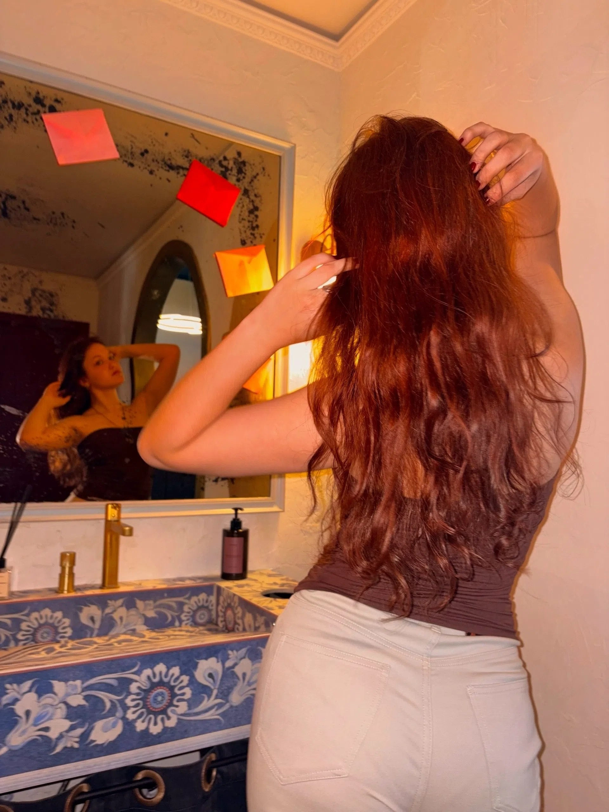

02 / Глава 1
Sabrina Medzitova · The birthday issue
A name.
A legend.
A little stardust.
Сабрина: имя с древней историей.
Скорпион: глубина, страсть и притяжение.
Sabrina / Scorpio
A name. A sign. A story.

01 / История имени
Сабрина
Sabrina — a name with a story
Имя Сабрина связывают с латинским названием реки Северн — Sabrina. В валлийском языке её называют Hafren, а в старых источниках встречается форма Habren. Корни этого названия уходят в кельтскую древность; его первоначальный смысл остаётся неизвестным.[1]
В литературной традиции Сабрина стала образом речной нимфы. Именно так её представил Джон Мильтон в «Комусе» (1634). Это мифологический образ, а не буквальный перевод имени.[1]
02 / Знак зодиака
The Scorpio edit · ♏︎
СкорпионScorpio
Глубина. Сосредоточенность.
И немного тайны.
В западной астрологии Скорпион — восьмой знак зодиака, водный и фиксированный. В традиционных описаниях его связывают с эмоциональной глубиной, настойчивостью и стремлением заглянуть под поверхность вещей.[3]
- Стихия
- Вода
- Качество
- Фиксированный
- Управители
- Марс / Плутонтрадиционный / современный
- Период, примерно
- 23.10 — 21.11
The birthday calendar
November
В этом месяце есть один особенный день.
Найди его в календаре.
Pick a day
У каждого дня —
своя история.
Выбери число. Самое важное мы приберегли для 21 ноября.